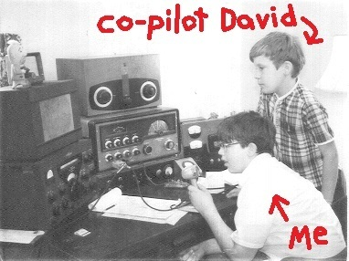

The Lost Moon Radio Request List
Here it is, folks. A collection of just about all the tracks Jupiter Jack has spun in the last three years (excluding holiday tracks and other season-specific material). Songs are italicized.
Episode 1 - Competition
Golden Scythe Awards
Porn Acting Class
Guided Mediation (Vietnam)
As Far As You Brain Can Think
The Legend of El Royale
Episode 2 - Health & Wellness
Uncles ("What's harder to make - a mermaid or a griffin?")
Stephen the Illusionist
Danny Olay at the Children's Leukemia Benefit
Dog Eulogy
Chicken vs. Egg
The Real You ("Girl, take off your skin...")
Episode 3 - Communication
Q&A Session After A Play
Depressed Voice Teacher
My Beloved Sarah... (Civil War Letters)
Sex On A Teacup...
Jesus Loves Me (No He Don't)
Slaves Made It
Never Been With A Woman
The Language of Love
Episode 4 - Holidays
Sexual Harassing Boss Talk
Hands Around The Cause
Nothing In The Closet
Episode 5 - Love & Death
The Pine
Animal Loveline
Notes on Lovemaking
Last Requests
Classics of Love with Barrister Mayhew
Eulogy for Bruce
Doggie Love Song
We're Gonna Die!
You Remind Me Of My Brother
Let's Break Up
The First Part of Making Love
I'm Gonna Take You Out (For a Real Good Meal)
Episode 6 - America
Who Did This? (Classroom Sketch)
Henry Ford Hears About The Car
Lewis and Clark (Parts 1, 2, 3)
Ellis Island Naming
Alternate History Author (Dinosaurs)
Two Girls at the Gettysburg Address
FDR Fireside Chat ("I definitely can walk.")
Free To Be Repressed
The Bomb Country Song
Thoroughly Modern Woman
Whites-Only Fountain
It's A Hard Life
America, You Glorious Mess
Episode 7 - Childhood
Jobs (kindergarten class)
Duck Duck Goosestep
Roger Wodehouse's Androgymnasium
Picking A Bar Mitzvah Theme
Truth or Dare ("Steal a Cop Car")
Purity Rings
The Rhyming Song
Why (Is My Babysitter Dead?)
Form 1040
Mama, You're My Girl
Lost In Austen
'99 Toyota Tercel
I Can Do It With Alcohol
Child At Heart
Episode 9 - Religion
Reincarnation ("Marmot")
Dionysian Intervention
Meanwhile at the Magic Castle...
Clap Your Hands If You Believe
I'm Beginning To Think That Leroy's Not The Messiah
Would It Really Be Heaven At All?
Children's Crusade
Cast The First Stone
Put Me On TV
The Devil of the Avant-Garde
Episode 10 - Travel
Malaise
Sweets and Sours
German Customs Agent
Travels with Todd
Jim Morrison Tour of the White House
Special Trip (Mr. Boots)
Staycation
There's Only One New York
Wine Country Rap
The 405
Last Trip
Episode 11 - Rebels & Outlaws
Yogurtland
Good Cop, Sad Cop
Low-Level Slutty Gods
Inspirational Preschool Teacher
Fired By A Folk Singer
New Cellmate
Breaking All The Rules
Let The Market Decide
A Cop Who Does It His Own Way
Che ("I Want To Be On A T-Shirt")
Not Your Depot Anymore
Fuck Cancer
Maybe I'll Vote This Year
Miscellaneous
Metaphors
Couples Costume
John Didn't Write The Vows
Chicken Pot Pie
My Fantasy ("Girl, put on this clown suit...")

Jupiter Jack takes his first request c. 1964
All requests must be made by March 31st.